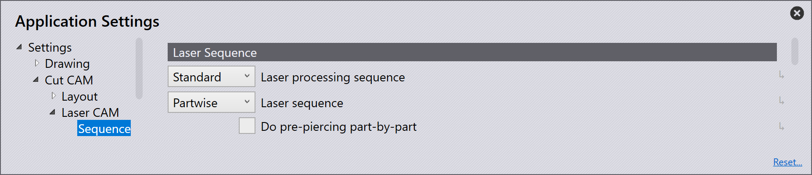
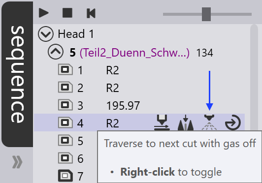
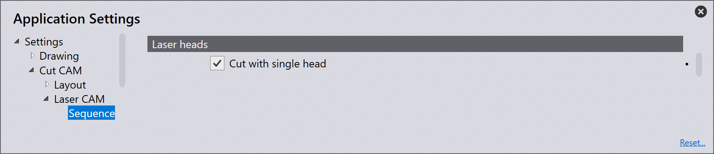

順序

Laser Sequence
Laser Processing Sequence -これを使用してレーザ加工順序 を規定します。最初にピアシングやマーキングをしなくてはならない場合、有用です。
Standard -マーキングと切断の間に特定順序は設定されてい ません。
マーキングしてから切断 -すべてのマーキングを最初に行い、次に切断します。
ピアシングしてから切断 -すべてのレーザセットアップをピアシング操作と切断 操作に分割します。まずピアシングが行われ、次に切断/マーキング加工工程が行われま す。
Mark → Pierce → Cut -上記と同様です が、まず全マーキングが完了します。
Pierce → Mark → Cut - 3 番目のオプ ションと同様ですが、切断とマーキングでは、最初にマーキングが行われます。
Laser Sequence -このドロップダウンに、レーザ順序を選択するオプ ションがあります。
Partwise -このチョイスを選択すると、パーツごとの 順序になります。一つのパーツの加工が始まると、そのパーツの全加工が済むまで、次の パーツには進みません。各パーツの順序が、レイアウトのすべての項目で同じである必要 はありません。マシンヘッドがどこから来て次にどこへ移動するかによって、同じパーツ でも、項目の順序が異なる場合があります。
Partwise native -このオプションを選択する と、パーツごとの順序になります。一つのパーツの加工が始まると、そのパーツの全加工 工程が済むまで、次のパーツには進みません。パーツと全ての項目の順序は、パーツ固有 のツーリングになります。
Inner first -内面形状のツーリングが最初に順序付 けられ、その後に外面形状の順序付けになります。
Sort by contour size -内面形状の全ツーリングが外 面形状より先に処理され、コンターのサイズに基づいてソートされます。
Do pre-pierce part-by-part -パーツ毎にピアシング加工 工程が行われます。一つのパーツのすべてのピアシングが完了すると、次のパーツに進む 前に切断を済ませます。
Route Traverse

Move pierce points to reduce traverse -このチェックボック スで、移動距離を短縮出来る接近点を選択します。
Move pierce points to prevent tilting -この チェックボックスで、切り抜き部分の傾斜を避けるために、別のアプローチポイント位置 を選択します。
Microjoint nested holes if tilting/falling through - このチェックボックスで、中にパーツがネスティングされているコンターが落下または傾 斜すると判断された場合、そのコンターにミクロジョイントを適用します。
Ignore holes smaller than this -指定値より小さ い開口部は、高さセンサーがマシンヘッドを入れるには小さ過ぎると見なされ、無視され ます。
Minimum cutting head height when traversing -ヘッドアッ プ移動の際の材料からのヘッド最小距離。
Max. head down traverse distance -ソフトウェア は、材料とノズルの間隔に基づいて、ヘッドダウンの移動制限を自動的に計算します。計 算値とここへの入力値のうち、小さい方が使用されます。
Route traverse lines around holes -これをオンにする と、可能であれば、ヘッドを持ち上げる代わりにレーザヘッドが切り抜き部分の周囲を回 避するようにルート設定します。
Allowance when routing around holes -切り抜き部分を回避 する線ルートを設定する場合、移動経路から切断エッジのこの間隔が維持されます。この 値が高すぎて切り抜き部分の周囲に移動ラインをルーティングできない場合、これらの移 動ラインは、機械ヘッドを上昇させた状態で処理されます。
Lift nozzle if routing penalty more than -このオプショ ンで、ルーティングペナルティがこの値を超えた場合、ノズルを持ち上げるかどうかを規 定します。
Allowance when routing around tilting holes -この オプションで、傾いた開口部の周囲のルーティング許容値を規定します。
Always reposition with head-up between holes -こ のオプションをチェックして、サブプログラムを追加生産でも安全に使用できるようにし ます。
Turn off gas between contours to prevent tilting - このオプションは、移動経路と以前に切断されたエッジとの最短距離が50 mm未満の場合、 レーザーヘッドがすでに切断されたコンター間を横断するときに、アシストガスを自動的 にオフにするために使用されます。
アシストガスのリアルタイムステータスは、シーケンスナビゲーターで確認できます。必 要に応じて、シーケンスナビゲーターのガスアイコンを右クリックすることで、特定の横 断のアシストガスをオフまたはオンにできます。

| アシストガスは、レーザーヘッドが次のピアシングポイントに到達する10 mm前に 自動的に再びオンになり、十分なガス圧を構築します。 |
このオプションが有効になっていない場合、アシストガスはコンター間のレーザーヘッド の横断中もオンのままになり、パーツがミクロジョイントまたはナノジョイントで保持さ れている場合でも、高いガス圧によりパーツが傾斜する可能性があります。
|
Turn off gas between contours to prevent tilting オプションを有効にするには、Settings / Cut CAM / Laser CAM / Sequenceに移動 します。 このオプションは、ガス抑制をサポートするレーザーマシンにのみ適用されます。 |
Laser heads
| このセクションは、関連するオプションが選択されている場合に適用されます。 |

Cut with single head -このオプションは、デュアルヘッ ドレーザ用で、単一のレーザヘッドでも切断できるようにします。